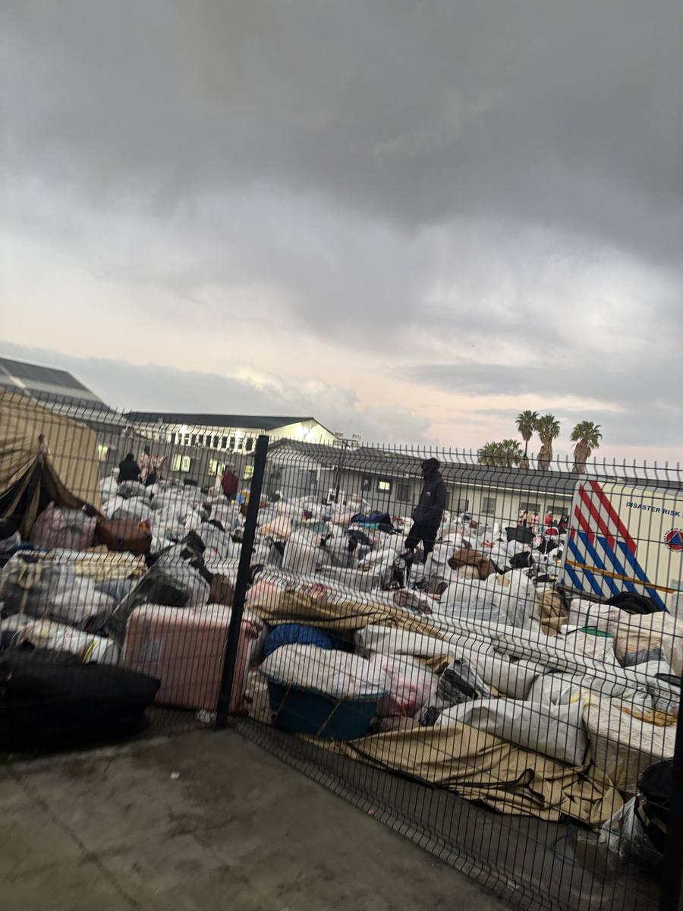
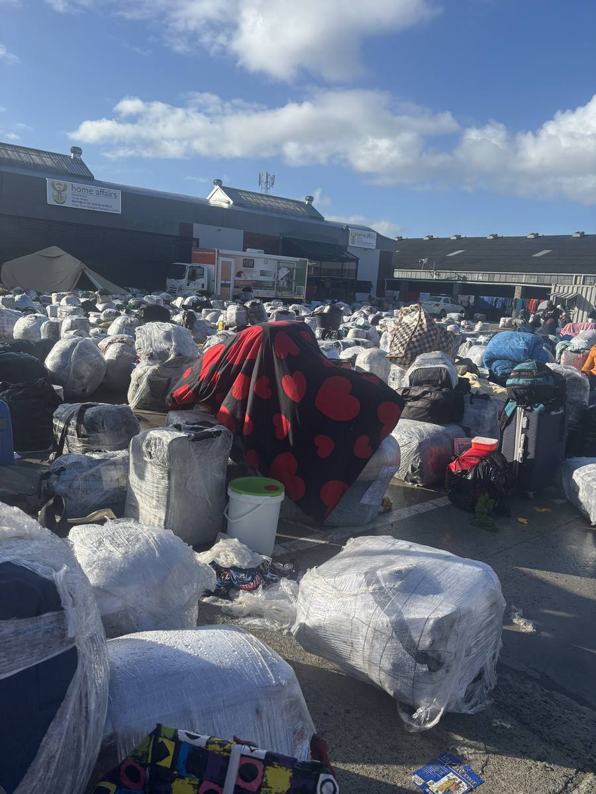
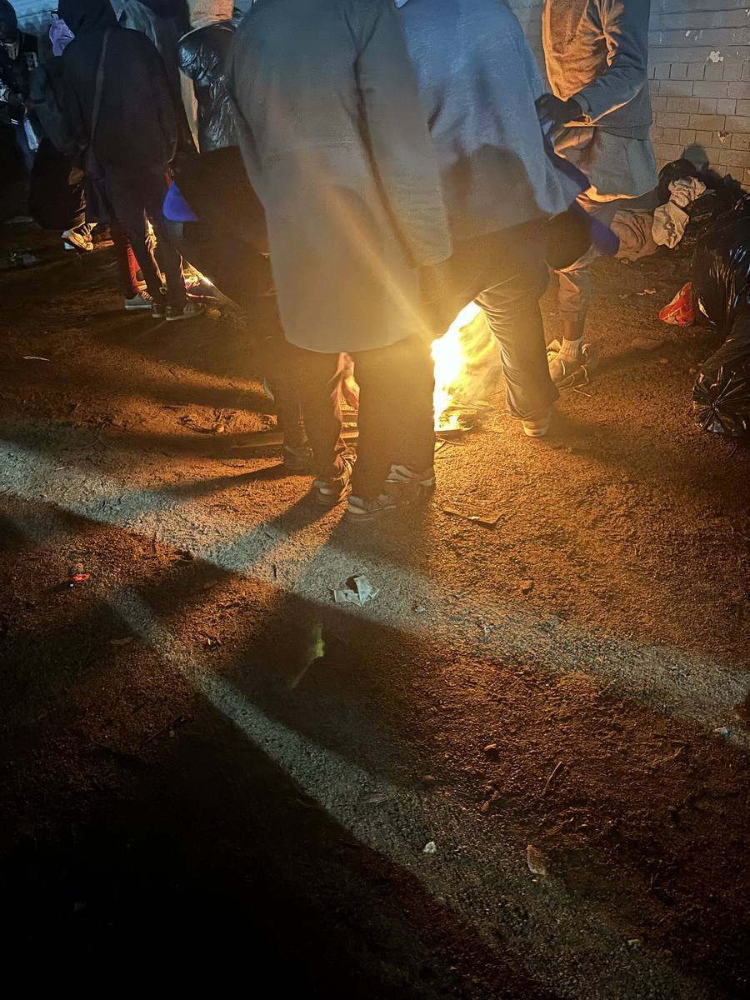

Over the past few years I have seen a shift within western media in how they use language when referring to certain communities. Subtle changes such as referring to homeless people as "unhoused", illegal migrants as "undocumented migrants", and disabled people as "differently-abled". I must admit that when I would read articles about the homeless crisis in LA, or the immigrants drowning in dinghies on their way to Europe, I never saw nor understood the need for the change in language. My thinking was that there is a term that I and everyone else knows, and changing it would only lead to confusion. So I somewhat held on to the old terms as though they would bring me comfort. But I never considered how these communities viewed this shift in language. How it helped bring nuance to narratives that we had all grown accustomed to.
The Power of Language
Nelson Mandela is known for saying that if you want to speak to a man's heart then you must do so in his native tongue. Implicit in this is an acknowledgement of the power of language. It connects people, and it can be used to evoke emotions and in turn incite actions. For good or otherwise. It is a lever that has to be used wisely and consciously. The difference between offending someone and landing a good joke lies in how effectively one uses language and other non-verbal cues. And when we apply certain terms to entire communities of people, we are pulling that lever whether we intend to or not.
To be homeless means that we can drive past you as you ask for food. It means that us home-full people can make the assumption that whatever money we give you will be used for drugs. It means that we can cringe when you stand outside a restaurant watching people spend money on food. And it means that we can be grateful to the waiting staff as they shoo you away, so that we can continue to enjoy the amazing service. Definitely earned a 10% tip minimum. And to be disabled means that you will forever be defined by what you cannot do. So in every conversation, whether relevant or not, your dis-ability is at the forefront. It enters the room before you do. That is if we care enough to create a pathway that accommodates your disability.
The key theme here lies in the negative connotations that are associated with certain terms. And so any attempt to use a different term is also an attempt at distancing individuals from all those connotations. Because we have in our minds so many narratives around homelessness, disabilities and immigrants. And the issue with some of these notions is that they can excuse us from seeing the humanity in others.
The Weight of a Single Word
The word "illegal" hits so many fault lines because we have all either been victims of a crime or know someone that has. If someone makes a lot of money illegally, we jubilate and thank the police when we see footage of their possessions being repossessed. And in those moments, we take little consideration for the livelihood of the family of this person that has transgressed against the law. The just thing is that they be punished for their crimes. So when we describe a human being that does not have the necessary documents to reside within a country as illegal, we seed in the minds of many the idea that these people have wronged us as a society. They have broken a social contract which we are all party to. And justifiably should be called to task.
As South Africa braces itself for the planned anti-immigrant protest on 30 June, many foreigners living within the country have been forced to reconsider their stay here. The climate around immigration is not only hostile in rhetoric, but this hostility has manifested itself and forced many foreigners to run for safety. They have flocked to police stations in KZN, and most recently to the Zimbabwean consulate in Cape Town. Immigration laws are clear about what is required for one to live within the republic legally, but so too are the laws on how a state should treat all individuals that reside within the country, legal or otherwise.
Witness
And it is here where our own morality and our laws are tested. I witnessed the conditions under which undocumented Zimbabwean immigrants were held at a Home Affairs office in Cape Town, after they had been moved from the consulate that they had fled towards. Many of them spent the entire night in the rain. Some mothers and their children were allowed to sleep indoors, without their belongings. And in the middle of the night, they were asked to step outside and into the rain so that they could be counted. And so they stood, like data points on a scatter plot. One, two, three. They eventually made it back inside, but you can imagine how traumatic it was for the children that are too innocent to understand the predicament that they find themselves in. This may very well be one of those incidents that strips children of their innocence.


Outside, the men were left to fend for themselves, without shelter, blankets or an assurance of when they would be assisted. Many gathered kindling from nearby trees to build makeshift fires to keep themselves warm in the rain. I witnessed as people scrambled to find enough wood to start a fire. I watched as they used the plastic bags, that they were using to protect themselves from the rain, as kindling to help start a fire. I witnessed as people argued about who gets to be around the fire. There were many fires but far too many people to provide comfort to them all. There were not enough trees from which to get twigs. So they fought, verbally, amongst themselves for the few resources that were available. Which was ironic because a lack of sufficient resources for the masses was partly why they were here. Every man for himself, God for us all.

It smelt like a forest fire but also like wet grass on account of the rain. Some security guards asked people to put out the fires as it would ruin the grass. From a landscaping perspective, a very valid point. Also very humane given the circumstances.
Reflection
As I looked at the crowd in the cold of the night, I was overwhelmed with a sense of hopelessness. I was hearing sadness manifested in the intonations of my native tongue. The pain cut deep. I could see myself in all the faces that I saw. I wondered what awaited them back home in Zimbabwe. Would it still feel like home or had they grown apart from it and moved in different directions. The circumstances that caused them to uproot their lives and disrupt their journey within Zimbabwe had somewhat been replicated, because yet again they were uncertain about their future. They could feel that there was not enough oxygen for them to continue to live here with their families. And sadly it took this much suffering for their kinfolk to recognise their plight.
I was there, all documented and all, for my own purposes. But I could feel the disconnect. I stood for over six hours in the cold with them but I was more certain about how I would be treated. I had some hope. They did not.
I wondered if all this could have ended differently or if the system had simply reached a critical point with a sole destination. But I still thought about how we got here. What allowed us as a society to allow people to be treated like this. Surely they knew that it would rain. Could they not see that people were cold. How were they expected to sleep. And it was then that it hit me. The seed had long been planted. They were illegal. And that is enough for us to go on with our lives.
Granted there are many advocating for them, in the form of activist groups, but the narrative has been defined. Justice, and the many forms that it comes in, is at times the exclusive preserve of those that we like. But when we look at how we treat those on the margins, we will see our true values being reflected back at us.